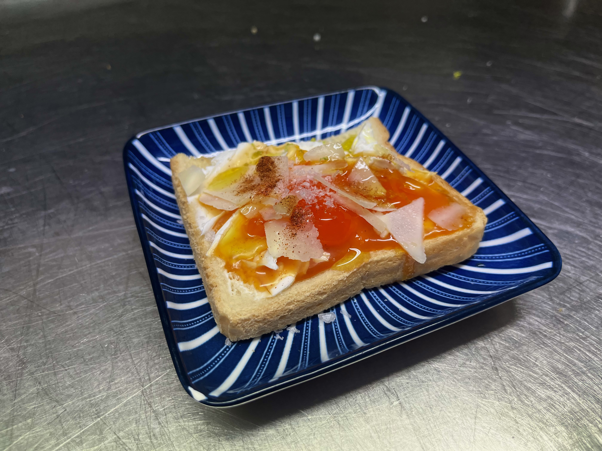
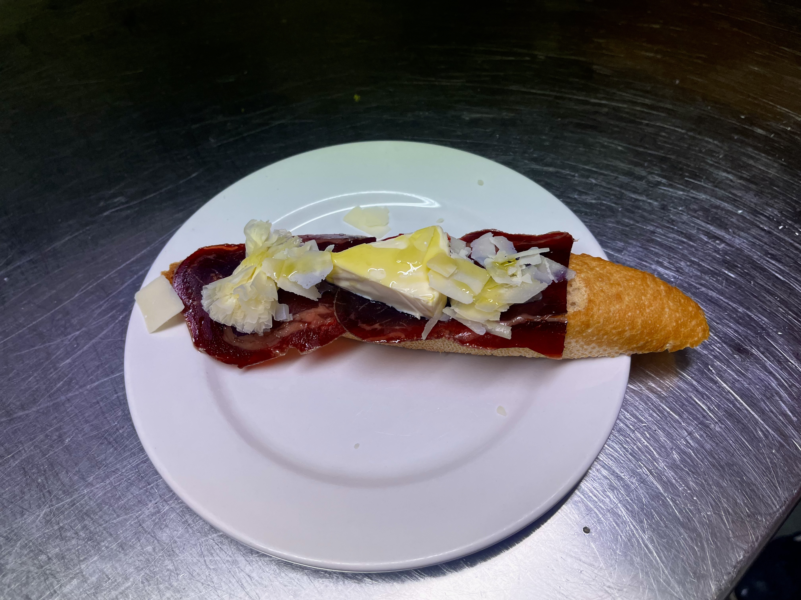
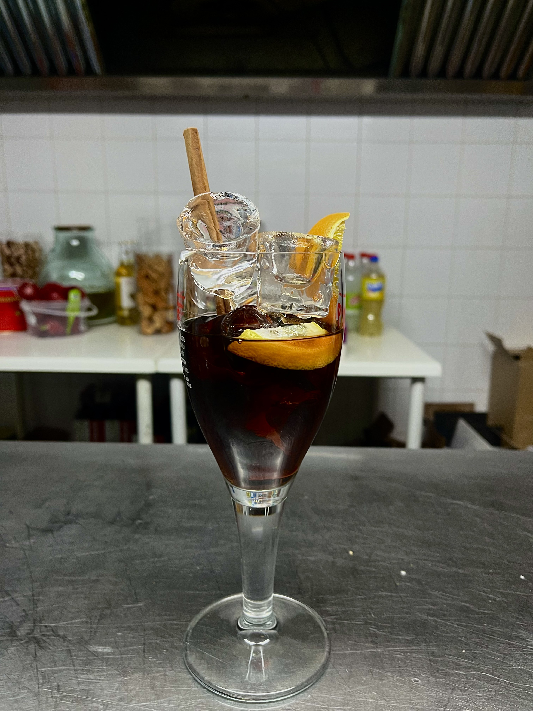
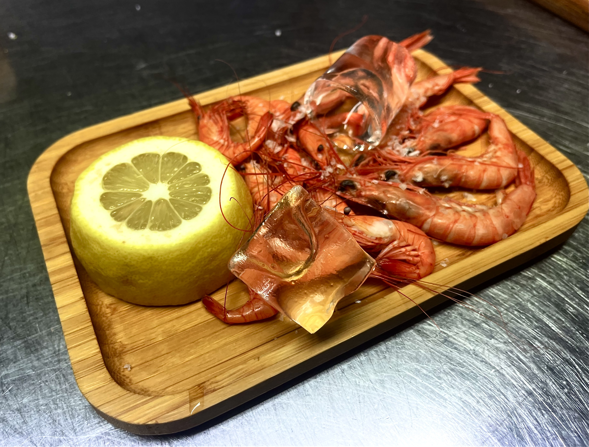
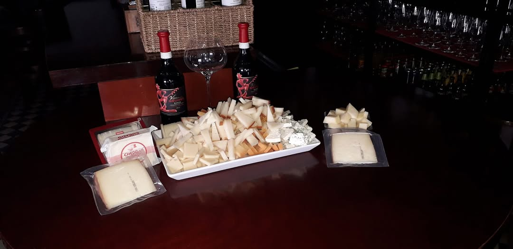
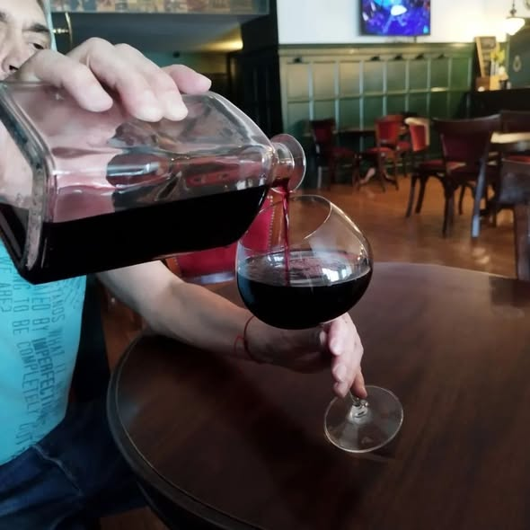
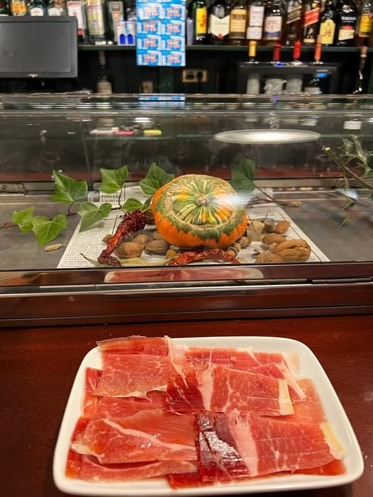
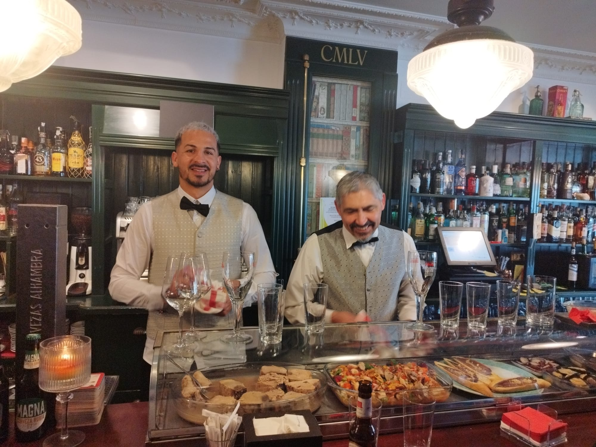
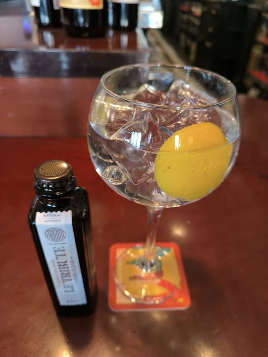
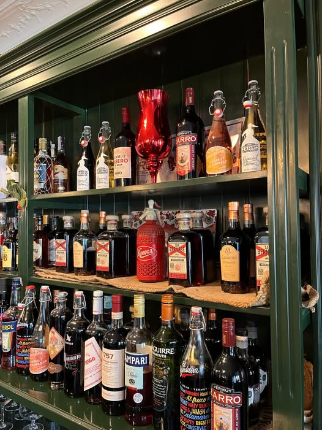

Nuestro Pincho de la Semana
Torreznos de Soria
¡No te puedes perder nuestros auténticos Torreznos de Soria! Crujientes, sabrosos y con la marca de garantía. El acompañante perfecto para tu vermut o tu cerveza. ¡Una delicia que te transportará al corazón de Soria!
Ver más en el menú
Sobre Nosotros
Bienvenidos al Café Bar Rivoli, un rincón acogedor en Soria donde la tradición y la calidez se encuentran en cada rincón. Con más de 20 años de historia, hemos sido testigos de miles de conversaciones, celebraciones y momentos especiales de nuestros clientes.
Nos enorgullece ofrecer un ambiente familiar donde cada persona que cruza nuestra puerta es recibida como un amigo. Nuestra filosofía es simple: buen producto, buen trato y un espacio donde sentirse como en casa.
Ya sea para disfrutar de un café por la mañana, un vermut al mediodía o un cubalibré por la noche, en Rivoli encontrarás siempre una sonrisa y la mejor atención.
Vermuts de Calidad
Amplia selección de los mejores vermuts
Cubalibres Excepcionales
Preparados con las mejores marcas
Pinchos Caseros
Deliciosos pinchos elaborados diariamente
Ambiente Familiar
Un lugar donde todos son bienvenidos



¡Especial de los Jueves!
Ven a disfrutar de nuestra tradición más sabrosa
Jamón Gratis con tu Consumición
Todos los jueves, con cualquier consumición que pidas, te invitamos a un delicioso plato de jamón de la mejor calidad.
¡Una tradición que nos distingue y que nuestros clientes adoran!

Nuestros Pinchos
Una selección de nuestros pinchos más populares, elaborados con ingredientes frescos y todo el sabor de la cocina tradicional.


Nuestra Galería
Descubre el ambiente y el espacio de nuestro bar. Una terraza acogedora y un interior lleno de historia.






Horarios de Apertura
Recuerda: ¡Jamón gratis los jueves con tu consumición!
Dónde Estamos
Información de Contacto
Carretera de Logroño, 37
42004 Soria
vicentemartinbueno@gmail.com
Fácil acceso por carretera, con parking disponible en la zona
Noticias y Novedades
30 de noviembre de 2025
¡Música en directo este Sábado!
Este sábado por la noche, a partir de las 22:00, tendremos la actuación en directo del dúo acústico "Soria Suena". Ven a disfrutar de buena música y el mejor ambiente. ¡No te quedes sin sitio!
15 de noviembre de 2025
Nueva selección de vinos de Ribera
Hemos incorporado tres nuevos vinos de la D.O. Ribera del Duero a nuestra carta. Pide recomendación a Vicente y déjate sorprender por sus matices. Perfectos para maridar con nuestros pinchos.
01 de noviembre de 2025
Renovamos nuestra terraza de invierno
Hemos acondicionado nuestra terraza con nuevos calefactores y mantas para que puedas seguir disfrutando de ella incluso en los días más fríos. ¡Tu rincón favorito, ahora más acogedor que nunca!
Preguntas Frecuentes
¿Cómo funciona lo del jamón gratis los jueves?
¿Hacéis reservas?
¿Tenéis terraza?
¿Servís comidas?
Contacto y Redes Sociales
Visítanos
Estamos encantados de recibirte en nuestro bar. Ven a disfrutar de un ambiente familiar, buen trato y los mejores productos. ¡Te esperamos!
Síguenos
Mantente al día con nuestras novedades, promociones especiales y el día a día del Café Rivoli.